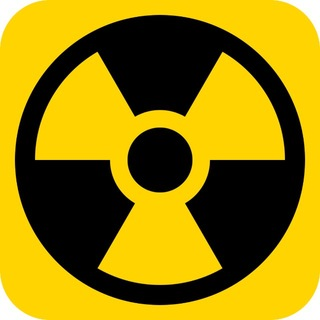
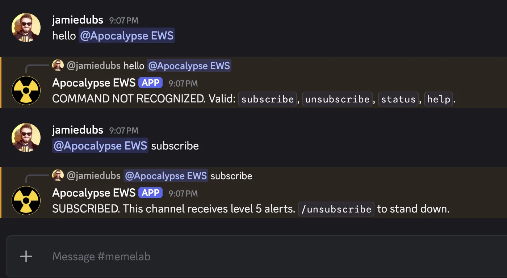

tracked-aircraft anomalies / rolling 24h / every level transition announced

Mirror of the upstream EWS. Most days the level stays at 1.
/subscribe, or @-mention the bot
with subscribe.
subscribe. No mention
needed.
Client id not set. Edit docs/index.html and replace
YOUR_DISCORD_CLIENT_ID.

/subscribe [channel]/unsubscribe/status/help@-mention the bot with the same word — same effect. In a DM, just send the word.
The upstream tracks unusual private-jet activity over a rolling 24-hour window and assigns an emergency level from 1 to 5. This bot polls the upstream every 30 minutes and announces every transition — both rising and falling. Most days the level stays at 1 and you hear nothing.
2 ↑ Notice. Emergency level 2. 3 ↑ ELEVATED. Emergency level 3. 4 ↑ WARNING. Emergency level 4. 5 ↑ ATTENTION. EMERGENCY LEVEL 5. ↓ Stand-down. Emergency level returned to N.
Each transition message also carries the upstream's text label, the
z-score, and an asOf timestamp. On a real level-5
event you'll additionally receive the full incident payload (title, link,
pubDate) from the upstream RSS feed.
ATTENTION. EMERGENCY LEVEL 5.
{title}
{pubDate}
{link}
Source feed: rss.xml · Telegram channel: @apocalypse_ews.